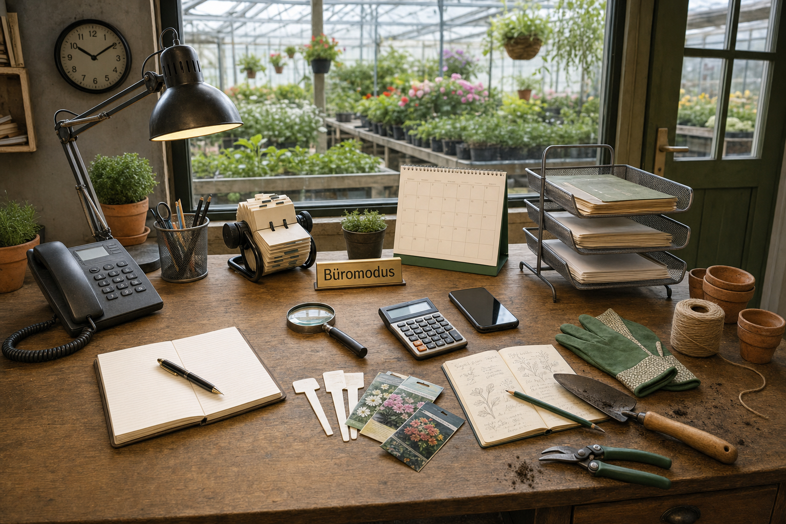

Willkommen bei Pflanzen-Coach
Guten Tag. Wir freuen uns, dass du unser Programm nutzt. Dieser Assistent führt dich kurz durch die ersten Einrichtungsschritte. Danach kannst du sofort Pflanzen per Handyfoto aufnehmen, Dünger eintragen und mit dem Pflegeplan starten.
Du kannst den Assistenten jederzeit erneut öffnen und den Nutzungsmodus später ändern. Vorhandene Daten werden dabei nicht gelöscht.
So starten wir
Wie möchtest du arbeiten?
Passende Grundstruktur
Erste Pflanzen aufnehmen
Du kannst später beliebig viele Pflanzen ergänzen. Für den schnellsten Einstieg reicht ein Foto und ein kurzer Standort.
Düngerbestand aufnehmen
Fotografiere am besten zuerst die Rückseite. Dort stehen meistens Dosierung, Anwendung, Warnhinweise und Saison.
Wetterort und KI vorbereiten
Damit Außenpflanzen, Rasen und Wetterhinweise sofort stimmen, wird hier dein Haupt-Wetterort gespeichert. Die KI ist optional und kann jederzeit später aktiviert werden.
ai-adapter verwenden.Bereit zum Start
| Foto | ID | Name | Botanischer Name | Standort | Licht | Gießen | Düngen | Status | Aktion |
|---|
Bildschirm zeigt zu dir. Die Oberkante des iPhone, iPad, Tablets oder Android-Geräts zeigt zum Fenster, Beet oder Standort, dessen Himmelsrichtung gespeichert werden soll. Nicht flach auf den Tisch legen. Abstand zu Magneten, Lautsprechern und Metall halten.
Vorbereiteter Echtbestand aus deinen Fotos
| Name | NPK | Dosierung | Saison | Bestand | Aktion |
|---|
Messgeräte
Messwert erfassen
Gärtner-Assistent Hinweise
Messhistorie
| Datum | Ziel | Messart | Wert | Bewertung | Notiz |
|---|
Ich führe dich zuerst durch die Beobachtung. Krankheit bitte nicht raten – Symptome, Foto und Standortdaten werden gemeinsam bewertet.
✅ Rundgang abgeschlossen
Wie wohnst du?
Eine Auswahl genügt. Passende Räume und Bereiche werden automatisch vorgeschlagen.
Bedientiefe
Welche Außenbereiche sind vorhanden?
Welche Räume gibt es?
Vorgeschlagene Räume sind bereits markiert. Nur anklicken, was tatsächlich vorhanden ist.
Garten und Ausstattung
Gartenbereiche
Rasenflächen
Ausstattung
Wetterort auswählen
Damit Außenpflanzen, Rasen und Wetterhinweise sofort stimmen, speicherst du hier deinen Haupt-Wetterort.
Zusammenfassung
Rasenfläche anlegen / bearbeiten
Eigener Jahrespflege- und Düngeplan
Bewässerungsmatrix
Manuelle Mähzeiten
Mähmatrix / Mähroboter
Rasenflächen und Pflegeplan
Name, Foto optional und Standort auswählen. Pflege kann später ergänzt werden.
| Pflanze | Bereich | Standort | Dünger | Wasser | Status | Aktion |
|---|
Gibt es Winterquartiere?
Welche Winterquartiere gibt es?
Übersicht
Angelegte Winterquartiere
Umzugsassistent
Vorschläge und Auswahl
Kontrolle
Winterquartier-Liste für Handy und Ausdruck
Wo steht welche Pflanze?
Beim Öffnen der App prüft PflanzenPflege fällige Aufgaben. Echte Pushnachrichten aus einer geschlossenen App benötigen später einen sicheren Push-Dienst.

| Prüfung | Status | Nachweis |
|---|
Pflanzenbezogenes Wetterzentrum
Wetterdaten werden in konkrete Frost- und Schutzmaßnahmen für den eigenen Pflanzenbestand übersetzt.
Frost-Einsatzplan
Materialbedarf
Frostprofile der Pflanzen bearbeiten
Wann blüht was?
Umschaltbar zwischen eigenen Pflanzen, Bibliothek oder beiden Quellen.
Licht & Standort einfach prüfen
Pflanze auswählen, Luxwert erfassen oder Standortfoto dokumentieren und Ergebnis speichern.